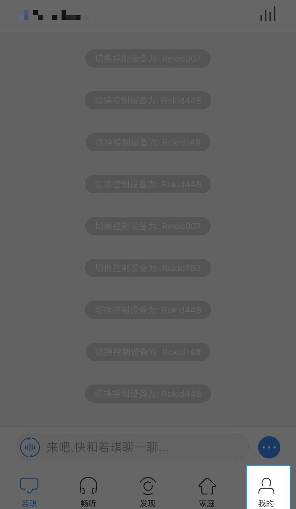
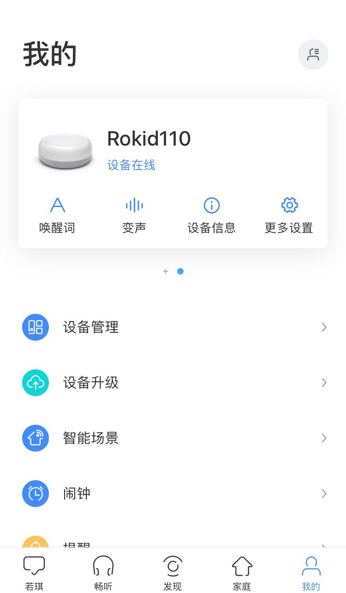
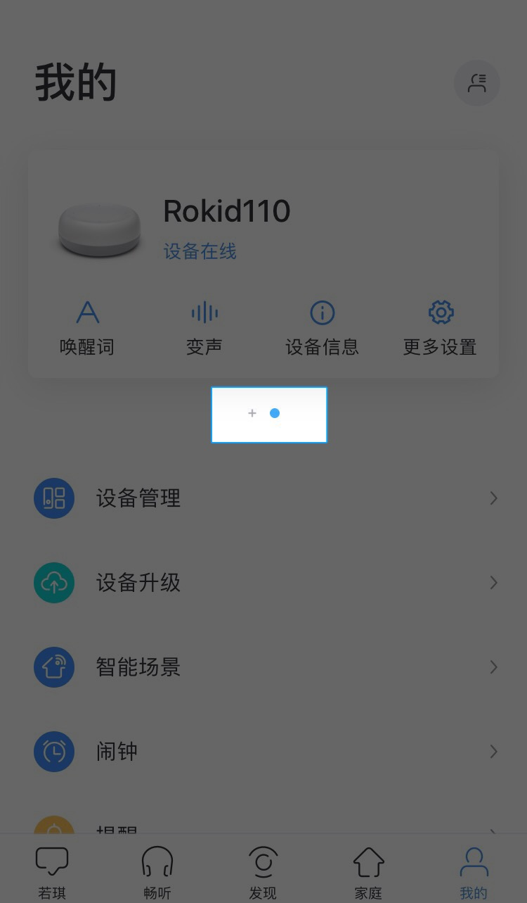
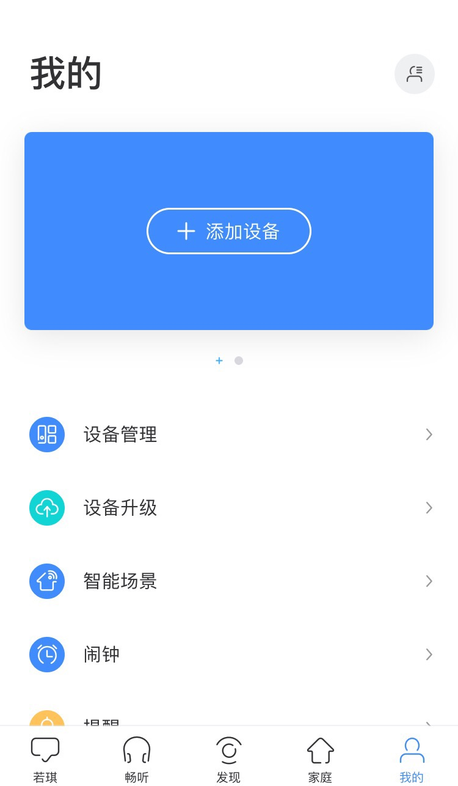

网络接入配置
网络配置是必须做的，因为我们的设备是基于云端语音服务的交互设备，网络接入是保证系统正常工作的基础。 这里介绍如何配置网络，主要分为蓝牙配网和手动配网。
蓝牙配网
注意：蓝牙配网所使用的是 BLE 协议，因此手机自带的系统蓝牙无法进行搜索，请使用 RokidApp 或者集成了 BLE 协议的软件。
一、首次使用RokidApp配网
第一步：开发板核心板 TypeC 接口与 PC 连接。
第二步：下载 Rokid 官方手机App，安装后，打开 App，注册账号并登录。
第三步：登录成功后，会进入【欢迎使用若琪】页面，并提示打开手机蓝牙。请按提示打开手机蓝牙，点击【我知道了】。
第四步：打开蓝牙以后，在欢迎页面底部会出现【发现可连接音箱】的字样，点击它会跳出可连接的设备（开发板对应的名称前缀为Devboard）。或者也可以点击“欢迎使用若琪”5下，就可以进入开发板的配网模式，如下图所示。
第五步：点击【立即连接】进入网络配置页面，输入Wi-Fi名称和密码，并点击“发送到音箱”。随后等待连接完成即可。
二、已有绑定设备的情况下配网
第一步：开发板核心板 TypeC 接口与 PC 连接。
第二步：下载 Rokid 官方手机App，安装后打开 App并登录。
第三步：登录App后，进入【我的】界面。如下图所示。


第四步：点击设备卡片下方的加号【+】，随后点击【添加设备】。如下图所示。 

第五步：随后进入【欢迎使用若琪】页面，进行网络连接。
1）若未打开蓝牙，App会提示您打开手机蓝牙。
2）若已打开手机蓝牙，App会自动跳出可连接的设备（开发板对应的名称前缀为Devboard）。
3）点击【立即连接】进入网络配置页面，输入Wi-Fi名称和密码，并点击“发送到音箱”。随后等待连接完成即可。
手动配网
通过执行以下五个步骤进行配网，然后 ifconfig 查看是否获得 ip 地址。
- adb shell 登录 RokidOS
- vi /data/system/wpa_supplicant.conf
ctrl_interface=/var/run/wpa_supplicant ap_scan=1 update_config=1 network={ ssid="wifi名" psk="wifi密码" } - sync
- wpa_cli reconfigure
- systemctl restart dhcpcd